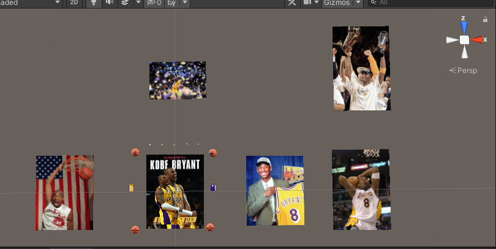
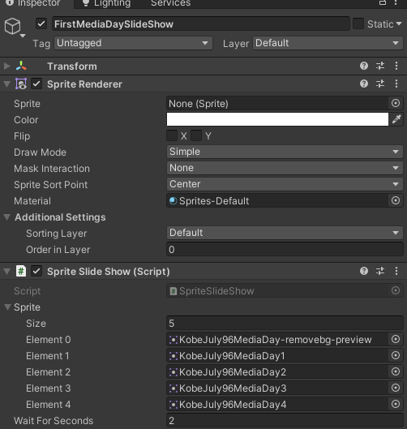
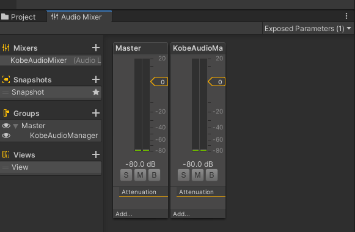
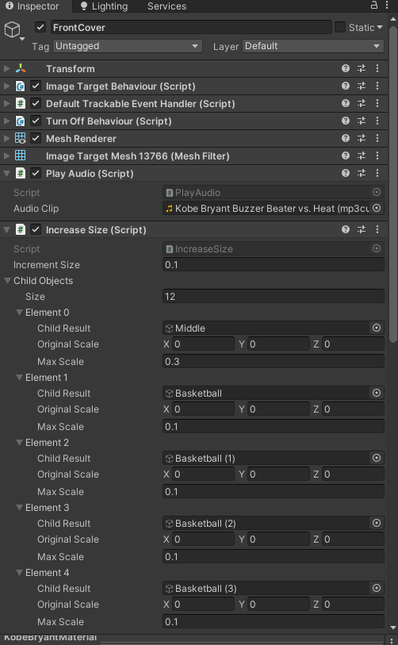
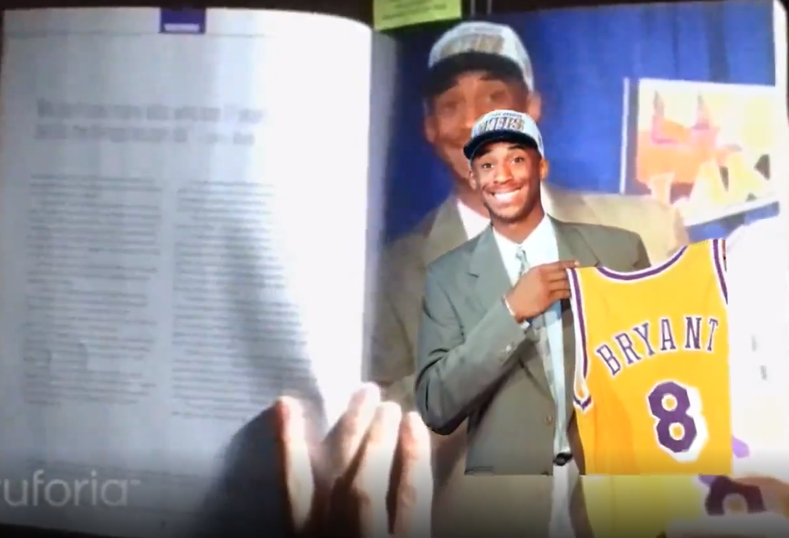
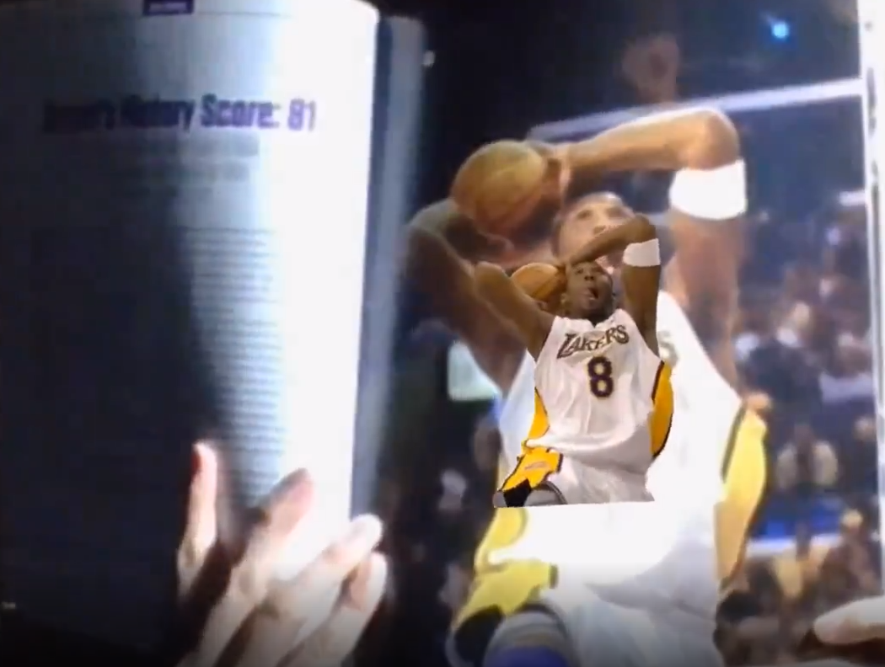
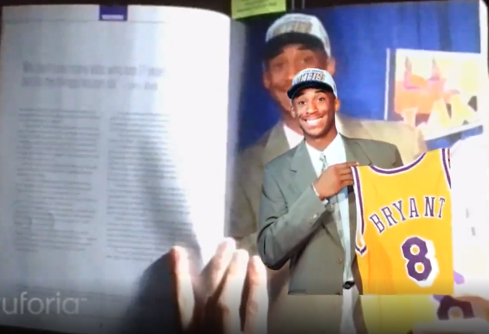
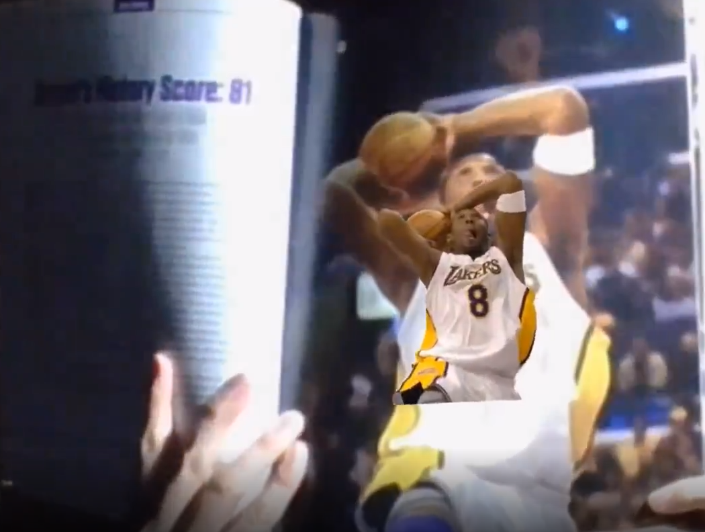
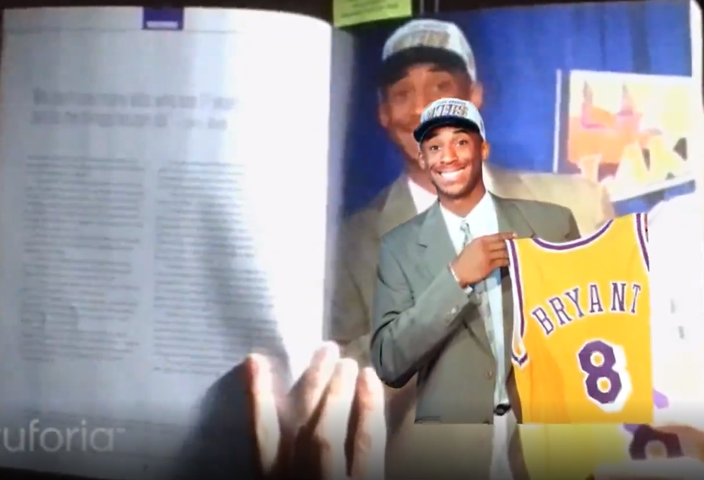
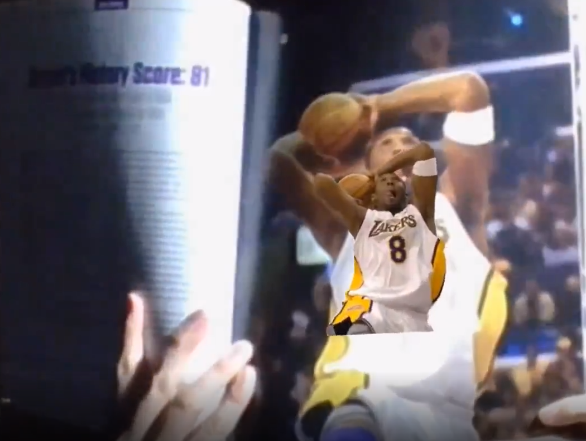

Sports Book Alive - Life of Kobe Bryant
>
Have you ever read a book and wished that it came alive right in front of your eyes? This app bring the life of Kobe Bryant alive from one of Kobe's booksAndroidC#Unity, VuforiaMarch 2021XR 30 day challenge held by Circuit stream. Topic: "Using AR, create an interaction with an everyday object." When I transit to school or work everyday before the pandemic hit, I always bring a book with me. So I decided for this competition I would make an AR project using Vuforia to make a Kobe Bryant book come alive! I started off prototyping to make sure that the database images from Vuforia would be detected by making a 3D object appear such as a cube or sphere. Below shows the sprite database from Vuforia being added into my scene

Once I was sure all images will be detected I tried to make sure a single 2D sprite image can appear. Then I tried adding more sprites to see if detecting an image can make multiple images appear-spoiler alert: it did!Then I attempted to use animations to make a "slide show", but that failed miserably. So I decided to use code instead. I created a Sprite array and use coroutines to change sprites every x amount of seconds specified in the inspector.

Once the images appeared, I tried to make any audio play sound when an image was detected.Then once I know audio works I started looking for audios on Youtube (then used Youtube to mp3 converter and then mp3 cutter)I noticed that when an image stops getting detected and using audioSource.Stop(), the audio stops abruptly, sounding weird. So I decided to fade the audio out using an AudioMixer.

Then I started adding extra effects such as making images rotate and particle effects. Since each image detected may have a different amount of sprites, or the time it takes to change sprites are different, I made sure to make those values public so I can edit the seconds/numbers in the inspector.

And now my book is alive!


Thank you to Circuit Stream for making this competition. One of the main reasons why I enjoy coding is because of Circuit Stream.
 

Thank you to Circuit Stream for making this competition. One of the main reasons why I enjoy coding is because of Circuit Stream.


Thank you to Circuit Stream for making this competition. One of the main reasons why I enjoy coding is because of Circuit Stream.